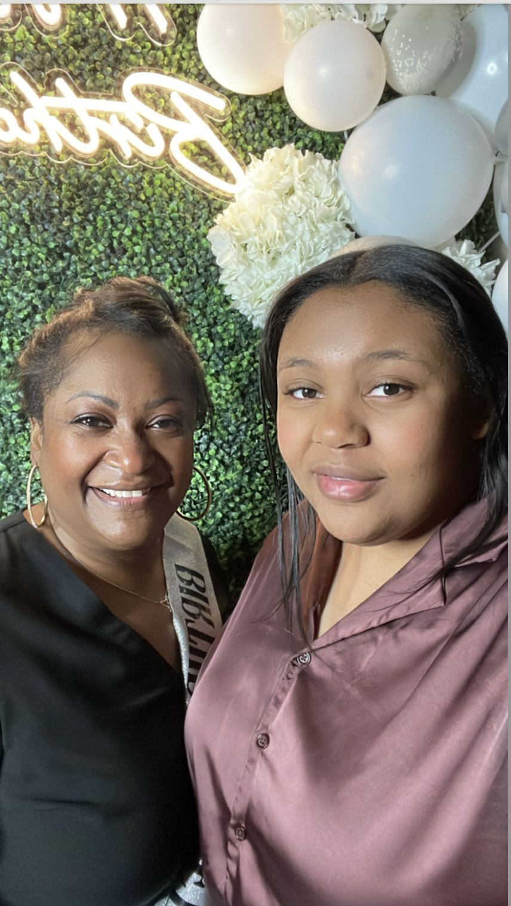
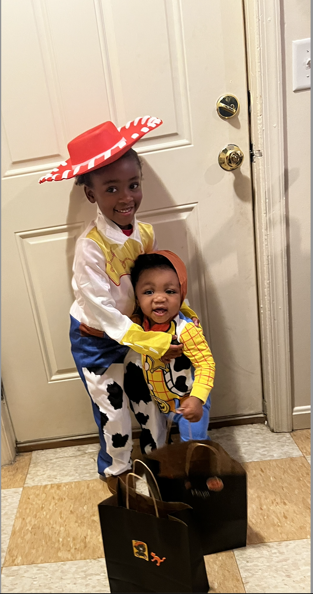

Hi Everyone, I'm Talia Crockett
Introduction
Previously, I was a nursing major with the interest of pediatrics. However, in May 2025, I earned my associate's degree in Information Technology at Delaware Technical Community College. I found myself interested in web development, as well as UX and UI design. I can be extremely shy and introverted, but once you get to know me, I'm a bit of a goofball.
Learning Styles
- I tend to learn best with visual examples and hands-on experience.
- I tend to value solo focus time but also appreciate collaborations.
- I tend to benefit from structured guidance and clear expectations when learning something new.
Personal Interests
Some of my favorite hobbies:
- Playing video games (RPGs, FPS, and simulator games)
- Watching anime and animated films
- Singing
- Reading thriller, mystery, and romance novels
Goals
-
One of my goals is to grow in both front-end and back-end technologies. Although, I'm currently more interested with design and user experience, I'm curious to learn and understand back-end logic, server-side development, and databases.
-
Another goal is to get better at writing clean, maintainable, and functionable code. As well as improve my communication skills whether in a collaboration or providing feedback.
-
Long-term, I hope to work at one of my favorite video game companies, such as Rockstar, Mihoyo, etc. Also, I want to create aesthetically pleasing (but functional!) projects.
Some of my favorite images! Featuring my mother along with my niece & nephew!

